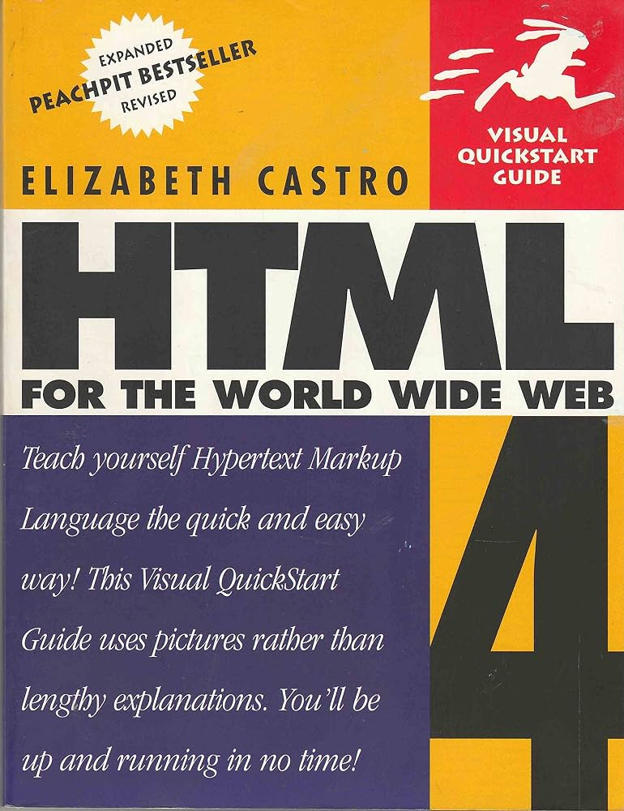
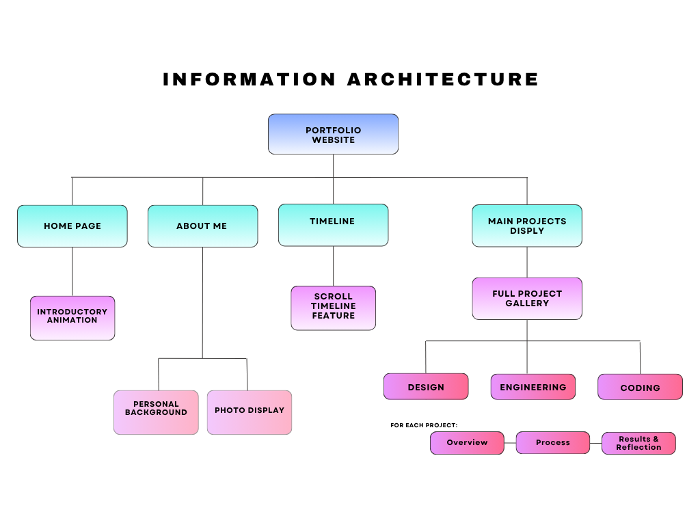

Interactive Portfolio Website


Overview
Many Rice students use portfolio websites to showcase their projects, experiences, and professional growth.
While exploring examples online, I noticed that many portfolios rely on generic templates that, although functional, often fail to reflect the creator's unique personality and interests.
To create a more authentic representation of my own work,
I designed and developed this portfolio website from the ground up.
I also made the source code publicly available so that other students can use it as a starting point to build portfolios
that better showcase their own identities, experiences, and creativity.
Under the Hood - Website Architecture
Before development, I mapped the website's information architecture to create a clear and intuitive navigation experience. This process helped organize content, define user pathways, and ensure that projects and experiences could be easily explored.

With the structure in place, I designed the layout and interface, focusing on usability, accessibility, and visual consistency. I then coded the website in HTML and CSS (on Visual Studio Code IDE), implementing responsive design principles so it would function effectively across desktops, tablets, and mobile devices. Throughout development, I tested and refined the site to improve performance, navigation, and the overall user experience, resulting in a polished and personalized portfolio website!
One of the biggest challenges during the development of this portfolio was creating the rocket animation. Achieving smooth, visually appealing movement while ensuring it performed well across different devices required careful experimentation with CSS animations. Another significant challenge was refining the codebase to make it easy to maintain and expand in the future. I spent time restructuring and organizing the code, using reusable components and clear naming conventions so that new projects, skills, or features can be added with minimal effort. This focus on maintainability has made the portfolio more scalable and easier to update as my work and experience continues to grow.
Results
Following the completion of the first iteration of this portfolio, I published the source code on GitHub. By making the project publicly available, I hope that other students and developers can use it as a reference or adapt it to suit their own personal portfolios and requirements.
While the primary objective of the project has been achieved—creating a portfolio that can be easily updated and shared to showcase my skills, projects, and career progression—I see this as the foundation for future development rather than a finished product. Going forward, I plan to continue exploring 3D web design and animation techniques to create more engaging and interactive user experiences. Much of the inspiration for this project came from software developer portfolios shared on GitHub, particularly those featuring 3D avatars with cursor tracking, immersive animations, and creative user interface designs. This first iteration marks the beginning of my journey into incorporating advanced 3D elements into modern web development.